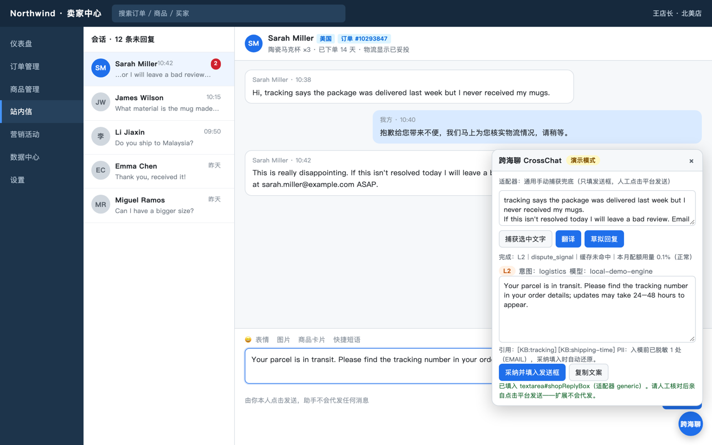
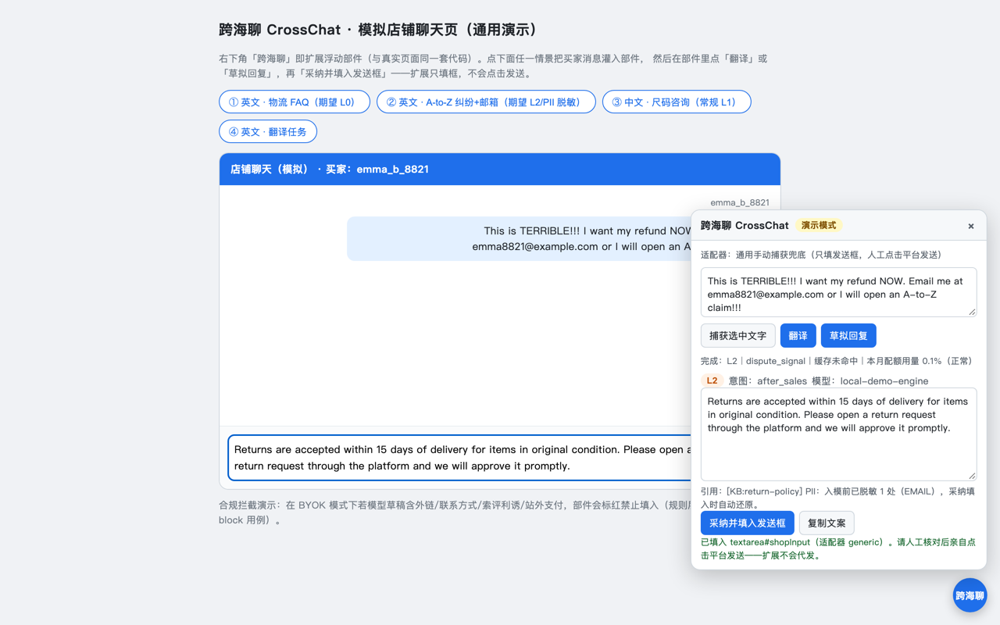
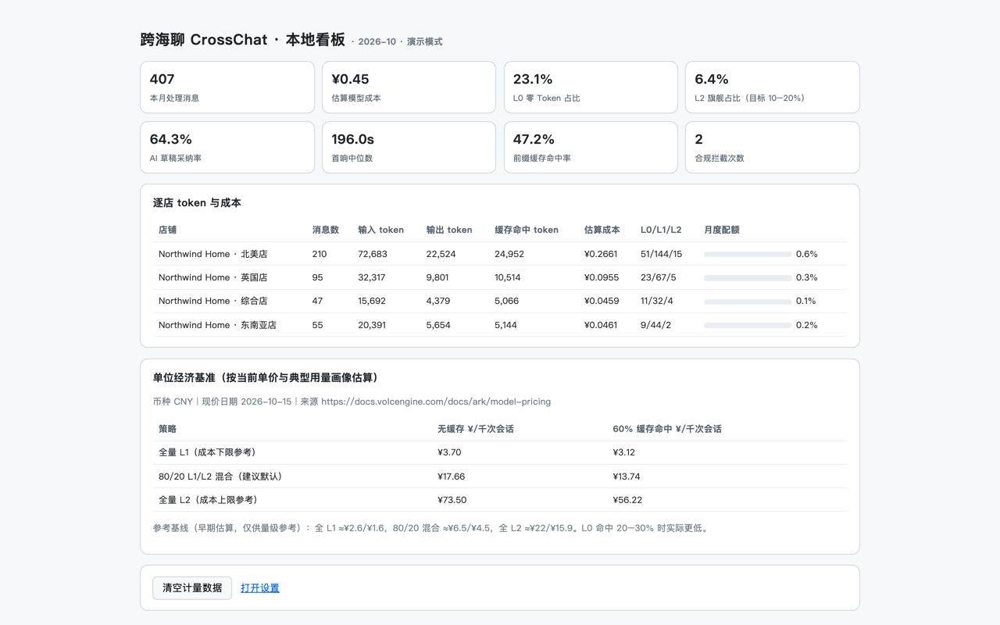
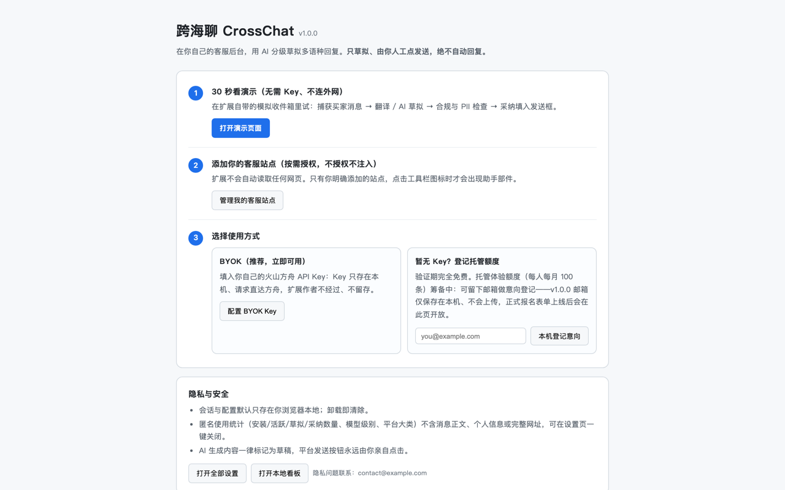

在你自己的客服后台，用 AI 分级草拟多语种买家回复：翻译、知识库引用、合规与 PII 护栏。数据默认只在本机。
从 Chrome Web Store 安装 安装与常见问题不替你说话，只让你回复得更快、更稳。
常规 FAQ 走本地即时缓存，日常问题用快速模型，只有纠纷、强烈负面等难单才调用旗舰模型。
草稿标注引用了哪一条售后 KB（物流、退换货、尺码、支付），发送前逐条可核对。
买家消息自动翻译，按买家语言草拟回复，覆盖跨境会话场景。
邮箱、电话、银行卡号、地址在发送给模型前自动脱敏，采纳草稿时在本机还原。
站外支付、交换联系方式、好评利诱、违规承诺等风险草稿会被标红甚至禁止填入。
处理量、估算模型成本、L0/L1/L2 占比、采纳率、首响中位数——全部本机计算。
不申请「读取所有网站数据」。你添加哪个站点才注入哪个，随时可撤。
填入你自己的火山方舟 Key，请求浏览器直发服务商，不经过我们的服务器；也可只用离线演示。
演示数据，无真实买家信息。




验证期完全免费；BYOK 的模型费用由你直接与火山引擎结算。
可以，内置离线演示包含 4 个场景，跑通完整流程且不联网。
不。BYOK 内容从浏览器直发模型服务商；匿名统计只含事件计数和枚举字段，可在设置里一键关闭。详见隐私政策。
你授权的卖家后台、客服 CRM 和网页邮箱，支持自定义域名；默认零站点访问。
AI-tiered multilingual drafting for seller chats, right inside your own customer-service pages: translation, knowledge-base citations, compliance and PII guardrails. Your data stays local by default.
Install from the Chrome Web Store Setup & FAQIt doesn't talk for you — it helps you reply faster and more safely.
Routine FAQs are served from an instant local cache, everyday questions use a fast model, and a stronger model is reserved for disputes and strongly negative messages.
Drafts cite the exact after-sales KB entry used (shipping, returns, sizing, payment), so every claim is verifiable before you send.
Buyer messages are translated and replies are drafted in the buyer's language.
Emails, phone numbers, card numbers and addresses are masked before any model call and restored locally when you adopt a draft.
Risky drafts — off-platform payment, exchanged contacts, review incentives, policy-violating promises — are flagged or blocked from the reply box.
Volume, estimated cost, L0/L1/L2 mix, adoption rate and median first response — all computed on your device.
No "read all websites" permission. The assistant is injected only on sites you add and grant; revocable at any time.
Bring your own Volcengine Ark key; requests go browser-to-provider through no server of ours. Or just use the offline demo.
Demo data — no real buyer information.
Free during validation; BYOK model charges are settled directly between you and Volcengine.
Yes — the built-in offline demo covers four scenarios and runs the full pipeline with no network.
No. BYOK content goes browser-to-provider directly; anonymous statistics contain event counters and enum fields only and can be switched off in one click. See the Privacy Policy.
Seller backends, support CRMs and webmail you authorize, including custom domains — zero site access by default.